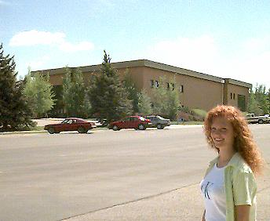

| Here, Trudi is working on a model as part of her Gross Anatomy class. This Building is home to the Agricultural and Biological Sciences Division. The landscape horticulture gardens are located next to this building and are one of the most visited areas on campus. The Biology Department, which includes all of the pre-medicine majors, has some of the most up-to-date facilities available. | Ezra Taft Benson Building  |